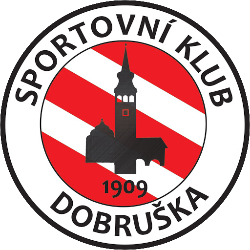
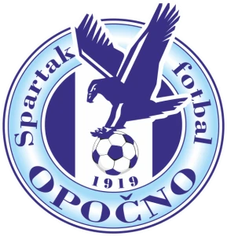
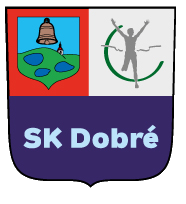
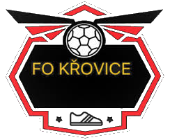
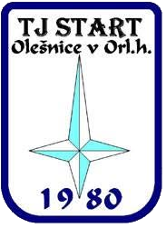
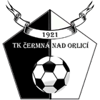
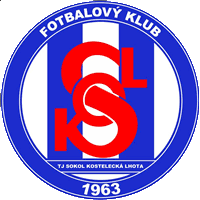

Nejbližší utkání
 TJ BANÍK VAMBERK B
TJ BANÍK VAMBERK B

SK DOBRUŠKA BVS
Poslední utkání
TJ BANÍK VAMBERK B
1 : 3

TJ SPARTAK OPOČNO BROZPIS A VÝSLEDKY SEZÓNY (10. LIGA)
3. KOLO
23.08.2026 (17:00)
TJ Baník Vamberk B
Venku
0 : 3

SK Dobré vs
4. KOLO
30.08.2026 (13:30)
 TJ Sokol Lukavice B
vs
TJ Baník Vamberk B
Venku
0 : 3
TJ Sokol Lukavice B
vs
TJ Baník Vamberk B
Venku
0 : 3
5. KOLO
06.09.2026 (17:00)
TJ Baník Vamberk B
vs

TJ FO Křovice Doma 3 : 5
6. KOLO
13.09.2026 (17:00)
 FC České Meziříčí B
vs
TJ Baník Vamberk B
Venku
0 : 4
FC České Meziříčí B
vs
TJ Baník Vamberk B
Venku
0 : 4
7. KOLO
20.09.2026 (16:30)
TJ Baník Vamberk B
vs
TJ Spartak Opočno B
Doma
1 : 3
8. KOLO
26.09.2026 (10:15)
SK Dobruška B
vs
TJ Baník Vamberk B
Venku
- : -
9. KOLO
03.10.2026 (16:00)
TJ Baník Vamberk B
vs

TJ START Olešnice v O.h. Doma - : -
1. KOLO
10.10.2026 (16:00)
TJ Baník Vamberk B
Venku
- : -

TK Čermná n.O. vs
2. KOLO
17.10.2026 (15:30)
TJ Baník Vamberk B
vs

TJ Sokol Kostelecká Lhota B Doma - : - Důležité momenty
Základní sestavy
Ohlasy po zápase